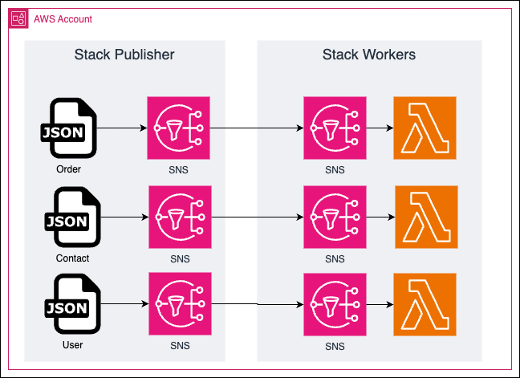

CDK 🏗️
2023-12-06
Agenda
- CDK 5 W's
- Project structure
- Deploy
- Test
- Create Stack and Construct
- Refactor
- Repeat
5 W's CDK
What CDK / IaC?
-
Infrastructure as Code (IaC)
[2009, puppet, 2009, chef, 2012, ansible, 2012, tf v0.1.0, 2021, tf v1.0.0] - AWS Cloud Formation [20011, aws cf]
Cloud Formation: ECS container with autoscaling and an application load balancer
What CDK / IaC?
-
Infrastructure as Code (IaC)
[2009, puppet, 2009, chef, 2012, ansible, 2012, tf v0.1.0, 2021, tf v1.0.0] - AWS Cloud Formation [20011, aws cf]
-
AWS Cloud Development Kit (CDK)[20011, aws cf]
Cloud Formation: ECS container with autoscaling and an application load balancer
Why CDK / IaC?
- [IaC]: Automation, efficiency, scalability, version control, auditing, collaboration, knowledge sharing, reproducibility, disaster recovery, documentation, ci/cd, testing, security
- [CDK]: DevOps tools (Terraform, Terragrunt, CloudFormation) / Dev tools (Pulumi, CDK)
- Declarative (💪 Idempotent) vs Imperative
When CDK?
Always?
Who CDK?
Shared?
How CDK?
App, Stack and Constructs

Project ⚗️
CDK Project Setup
-
CDK
Documentation
aws-cdk-lib -
Create new
project
-
$ npm init -y $ npm i aws-cdk-lib constructs
-
-
CDK
cdk.jsonconfig -
bin: App
CDK CLI
cdk listcdk synthcdk synth
Topic
How to Test?
Jest (FW) + assertion lib (aws-cdk-lib.assertions)
got = ./cdk.out/*template.json
-
AWS::SNS::Topicamount and andTopicName
Deploy 🚀
SQS
-
AWS::SQS::Queueamount and andQueueName
-
AWS::SQS::QueuePolicysubscribe to SNSAWS::SQS::QueuePolicy/AWS::SNS::Subscription
Lambda
-
AWS::Lambda::Functionamount and and name
-
AWS::Lambda::EventSourceMapping
AWS::Lambda::EventSourceMapping /
AWS::SQS::QueuePolicy
- SDK - SQS DeleteMessageBatchCommand delete messages after processing
SAM
Custom Construct
[orders-updated, contacts-updated, users-updated]
-
Add
contacts-updatedandusers-updated - Update amount of resources in tests
- Convert to
Construct